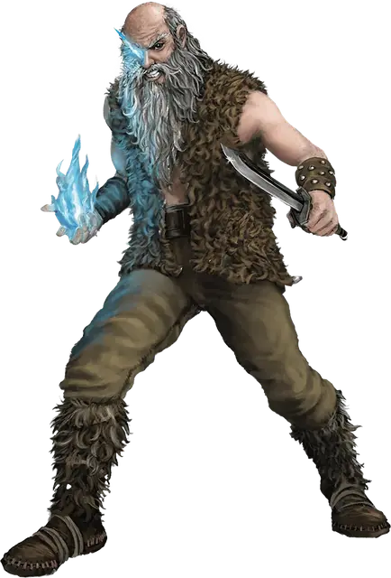

Одноглазый содрогатель
One-Eyed Shiver
Средний Гуманоид (Человек), хаотично-злой

Класс Доспеха 12 (15 с доспехами мага)
Хиты 49 (9к8 + 9)
Скорость 30 футов
| мод | спас | ||
|---|---|---|---|
| СИЛ | 10 | +0 | +0 |
| ЛОВ | 14 | +2 | +2 |
| ТЕЛ | 12 | +1 | +1 |
| мод | спас | ||
|---|---|---|---|
| ИНТ | 13 | +1 | +1 |
| МДР | 13 | +1 | +1 |
| ХАР | 17 | +3 | +3 |
Навыки Восприятие +3, Магия +3, Скрытность +5
Иммунитет к урону холод
Чувства пассивное Восприятие 13
Языки Общий
Опасность 3 (700 опыта)
Бонус мастерства +2
Особенности
Морозный туман. Пока одноглазый содрогатель жив, он излучает ауру холодного тумана в пределах 10 футов от себя. Если одноглазый содрогатель наносит урон существу в этой области, это существо также получает урон холодом 5 (1к10).
Использование заклинаний. Одноглазый содрогатель является заклинателем 5-го уровня. Его базовой характеристикой является Харизма (Сл спасброска от заклинаний 13, +5 к атакам заклинаниями). Он знает следующие заклинания чародея:
• Заговоры (неограниченно): леденящее прикосновение [chill touch], волшебная рука [mage hand]
• 1 уровень (4 ячейки): туманное облако [fog cloud], доспехи мага [mage armor], волна грома [thunderwave]
• 2 уровень (3 ячейки): отражения [mirror image], туманный шаг [misty step]
• 3 уровень (2 ячейки): ужас [fear]
Действия
Кинжал. Рукопашная или дальнобойная атака оружием: +4 к попаданию, досягаемость 5 фт., или дальность 20/60 футов, одна цель. Попадание: 4 (1к4 + 2) колющего урона.
Леденящее око. Одноглазый содрогатель создает луч холода [ray of frost] из своей пустой глазницы. Если он попадает, то, помимо получения урона от заклинания, цель становится опутанной. Опутанная таким образом цель может действием совершить проверку Силы Сл 13, чтобы окончить на себе это состояние.
Описание
Одноглазыми содрогателями называют внушающих ужас культистов, овладевших силой льда и холода.
Чтобы получить эту силу, содрогатели выкалывают себе один глаз и заменяют его ледяной белой сферой, которая может стрелять во врагов лучом холода. Когда сфера не используется, содрогатели прячут свой волшебный глаз за повязкой, однако даже в этом случае магическая сила сферы даёт о себе знать: в жилах каждого содрогателя течёт ледяная кровь, поэтому вокруг него постоянно клубится разреженное облако морозного тумана.
Одноглазых содрогателей боятся все, даже их братья культисты. Только лидеры культа Сокрушительной Волны осмеливаются отдавать приказы этим мастерам магии льда.